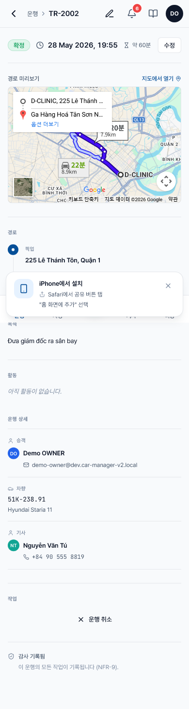
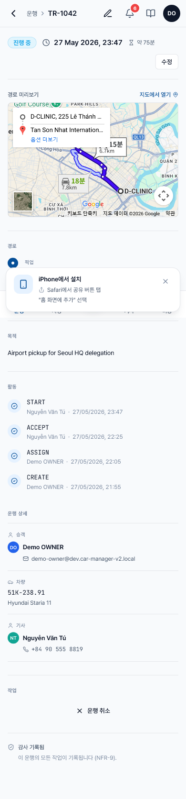

운행 시작 및 종료
- 사전 단계
- 운행이 "확인 완료" 상태여야 합니다 (운행 확인 참조)
- 소요 시간
- 한 번에 약 10초
- 자동 기록 항목
- 시각, 주행거리계 수치, 조작자 정보
이 두 가지 조작이 운행의 실시간 타임라인을 만듭니다. 기록된 데이터는 주행거리 보고서, 비용 계산, 정비 주기와의 자동 동기화에 사용됩니다.
운행 시작 (출발할 때)
1
주차 위치를 떠나기 전에 앱을 열고, 확인 완료된 운행의 상세 화면으로 이동합니다.
2
화면 맨 아래까지 스크롤한 뒤 "▶ 운행 시작" 버튼(녹색, 전체 폭)을 탭합니다.

3
시스템이 버튼을 탭한 시각을 운행 시작 시각으로 기록합니다. 운행 상태는 "운행 중"으로 바뀌고, 오늘 화면의 녹색 배너가 이번 운행으로 교체됩니다.
운행 종료 (도착했을 때)
1
목적지에 차량을 주차한 뒤 앱을 열고, 진행 중인 운행 상세 화면(오늘 화면의 녹색 배너)으로 이동합니다.
2
화면 맨 아래의 "⏹ 운행 종료" 버튼(파란색)을 탭합니다.

3
운행 상태가 "완료"로 바뀌고, 운행 종료 시각이 기록됩니다.
주행거리는 언제 갱신되나요?
현재 시스템은 차량 정보에 등록된 주행거리를 사용하며, 운행에 따라 자동으로 누적됩니다. 다음 버전에서는 다음 두 시점에 차량 계기판에 표시된 주행거리계 수치를 직접 입력하도록 안내할 예정입니다.
- 운행 시작 시: 시작 시점의 주행거리계 수치 입력 (운행 총 주행거리 계산용)
- 운행 종료 시: 종료 시점의 주행거리계 수치 입력 (차량 누적 주행거리에 합산)
🔭
다음 버전 예정 기능 안내 — 위 주행거리계 수치 입력은 향후 업데이트에서 적용될 예정입니다. 현재 버전에서는 표시되지 않습니다.
⚠️
"운행 종료" 탭을 잊지 마세요. 운행을 "운행 중" 상태로 밤새 놔두면 관리자에게 경고가 전달되고, 관리자가 수동으로 마감 처리해야 합니다. 그 결과 보고서의 근무 시간이 부정확해질 수 있습니다.
실수로 잘못 탭했다면?
| 상황 | 처리 방법 |
|---|---|
| "운행 시작"을 탭했지만 아직 출발하지 않은 경우 | 관리자에게 연락해 취소 후 다시 생성하도록 요청해야 합니다. 사용자가 직접 수정할 수 없습니다. |
| "운행 종료"를 잊고 이미 귀가한 경우 | 나중에라도 "운행 종료"를 탭하면 됩니다. 다만 기록되는 시각은 실제 도착 시각이 아니라 탭한 시각이므로, "메모" 필드에 사유를 남겨 관리자가 확인할 수 있도록 합니다. |
| "운행 종료"를 탭한 뒤에 다시 이동해야 하는 상황이 발생한 경우 | 새 운행을 생성하거나 관리자에게 연락하세요. 이미 완료된 운행은 "재시작"할 수 없습니다. |